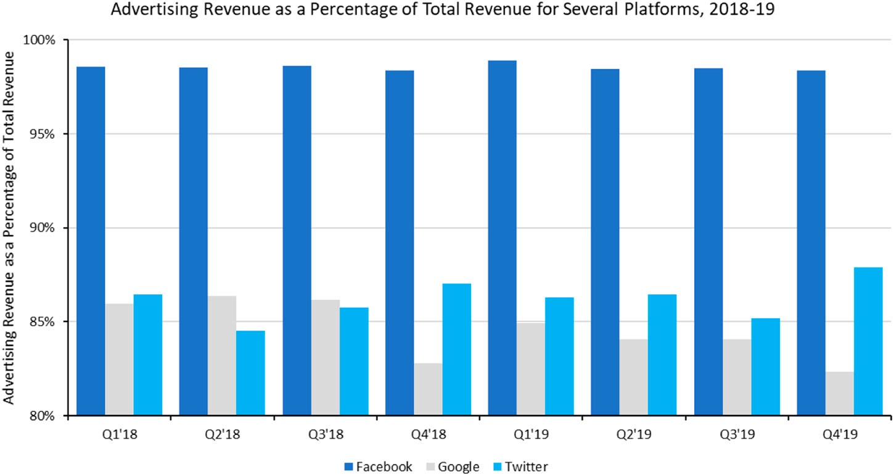
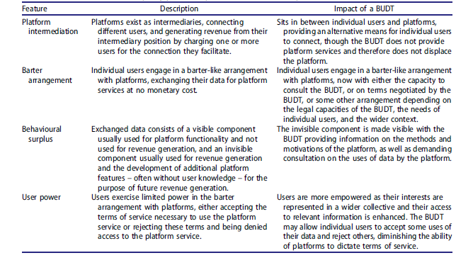
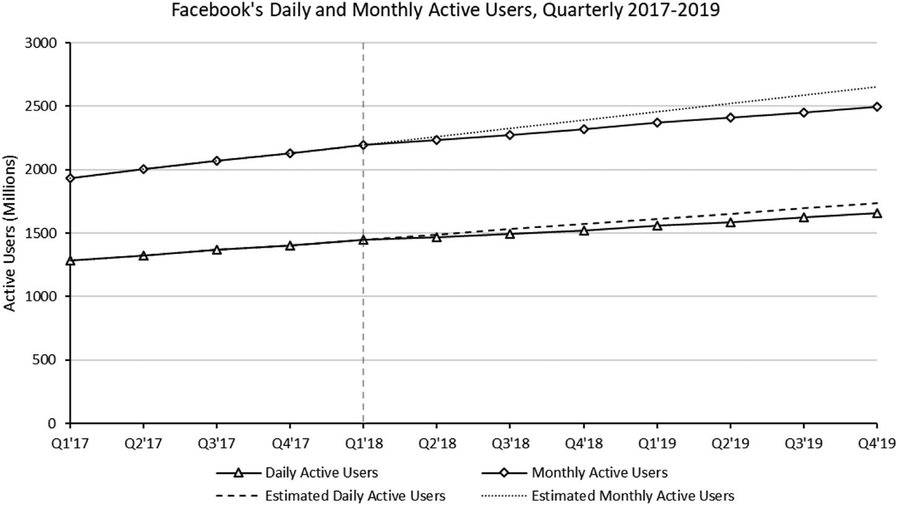
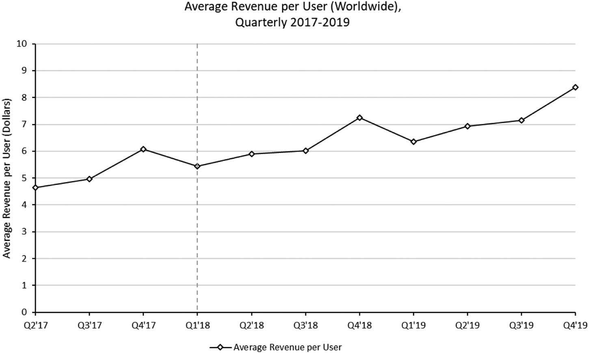
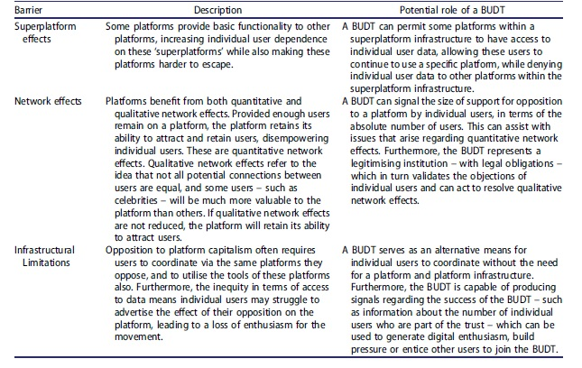

#DeleteFacebook
This article was first published in New Political Economy in 2021. It can be found here.
Abstract
In March 2018, a series of newpaper articles about the subversive use of the social media platform Facebook during various elections in 2016 were published. These revelations produced a backlash against the platform, which resulted in a popular hashtag, #DeleteFacebook.
This article uses the #DeleteFacebook campaign as a case study to analyse the contemporary model of platform capitalism. Furthermore, by introducing emerging literature on data trusts--specifically, the notion of a bottom up data trust--this paper argues the #DeleteFacebook campaign reveals, both in its conception and in its ultimate failure, a desire for an alternative model of platform capitalism.
By drawing on the #DeleteFacebook campaign, this article argues that a bottom up data trust designed to empower individual users can resolve many of the initial grievances, and barriers to success, experienced by the campaign.
Section 1 - Introduction
In March 2018, a series of newspaper articles about the subversive use of the social media platform Facebook by the psychographics firm Cambridge Analytica were published (Cadwalladr and Graham-Harrison, 2018). The firm was able to carry out this activity because they had been able to access, harvest and analyse the data of several million Facebook users. This violated Facebook's terms of service (Zuckerberg, 2018), but equally the firm had faced few checks, and Facebook was seen as having failed in its due diligence (Kuchler, 2018; Romm et al., 2018). This led to online criticism of Facebook, culminating in a popular hashtag--#DeleteFacebook.
This article uses the #DeleteFacebook incident as an interesting case study into the dynamics of contemporary platform capitalism--focused specifically on the platform model utilised by Facebook--as well as emerging conceptus of digital economy that seek to respond to perceived problems within contemporary platform capitalism. Specifically, this article considers how data trusts may be necessary to construct a new model of platform capitalism that offers recourse for the structural tensions which--it is argued here--the #DeleteFacebook campaign is a product of. More specifically still, this article focuses on a type of data trust known as a bottom up data trust (Delacroix and Lawrence, 2019), proposed to empower individual users by offering a means of collectivising users and giving them a voice. Through an analysis of the #DeleteFacebook campaign, several factors contributing to the campaign's ultimate lack of success are identified. Explanations for how a bottom up data trust can resolve these hindering factors are also offered.
The structure of this article is as follows. Section two introduces the conceptial of a digital platform and discusses features of contemporary platform capitalism. Broadly, four features are identified: (1) platforms exist as intermediaries between users; (2) users engage in a barter-like agreement with platforms, receiving platform-services for no monetary costs, but consenting to platform surveillance and advertising; (3) personal data which are 'exchanged' in this barter relationship consist of a transparent component, usually necessary for platform functionality, and an opaque or invisible component, usually used for monetisation; and (4) individual users exercise limited power, accepting the platform's terms of service or forgoing those services entirely.
Section three introduces the concept of a data trust, focusing specifically on Delacroix and Lawrence's (2019) concept of the bottom-up data trust (BUDT). Data trusts are a developing area within the digital economy literature which propose to change how data are controlled and accessed. In contrast to previous data trust conceptions which have focused on connecting platforms (Hardinges et al., 2019), the BUDT is offered by Delacroix and Lawrence's (2019) as a legal entity to coordinate and protect the interests of individual users.
Section four analyses the actions of the #DeleteFacebook campaign using the understanding established in the previous two sections. This article proposes that attempts taken by individual users to collectivise in opposition to Facebook, as well as the material action undertaken--to delete Facebook--demonstrate some recognition by individual users of power asymmetries between themselves and platforms (e.g., Facebook). This article argues that the #DeleteFacebook campaig need not have manifested as it did--and possibly would have been more successful--had a legal entity such as a BUDT been available to users. The primary contribution of this article, therefore, is to argue the #DeleteFacebook campaign represents an initial backlash to the dominant model of platform capitalism and evidences the need for legal entities such as BUDTs.
Section five provides a brief evaluation of the success of the #DeleteFacebook campaign, ultimately concluding that the campaign was ineffective. Disucssion then turns to why the campaign, from a digital economy perspective, was ineffective. Three reasons are offered: (1) a superplatform effect, raising the costs of deleting Facebook; (2) insufficient quantitative and qualitative network effects, which allowed the platform to withstand the effects of the campaign, while the campaign struggled to maintain momentum; and (3) a lack of coordination via non-platform infrastructure, which meant the campaign was simultaneously participating in the model of platform capitalism it was opposing. This article then proceeds to argue that an entity such as a BUDT could be used to resolve, wholly or partially, each of these barriers.
Section six concludes.
Section 2 - Contemporary Platform Capitalism
Platform capitalism is often seen as an evolution of the knowledge economy growth model (Srnicek, 2016; O'Donovan, 2020a), where 'knowledge become[s] a source of value' (Srnicek, 2016, p. 38), which drives economic growth (O'Donovan, 2020a). As Srnicek (2016) argues, the value of knowledge creates economic incentives for entities to accumulate and control the flow of knowledge--in the form of information and data--throughout the economy. These entities are platforms which:
at the most general level...are digital infrastructures that enable two or more groups to interact. They therefore position themselves as intermediaries that bring together different users (p. 43).[1]
Platforms profit from their position within the digital economy primarily by charging one or more of the users they connect some fee for that connection (van Dijck et al., 2018). A common example of this is advertising (Srnicek, 2016; Zuboff, 2019), with large platforms charging brands and advertising agencies a fee to advertise to other users of the platform.[2] Online advertising can be a significant part of some platform business models. For isntance, 20% of all global advertisement spending in 2016 went to either Facebook or Google (Zuboff, 2019), and for these platforms, advertising continues to make up a significant proportion of their revenue. This is especially true of Facebook (see Figure 1).
Figure 1. Comparative advertising revenue as a percentage of total revenue for Facebook, Google (Alphabet) and Twitter. Calculations are author's own.

If platforms generate revenue from their intermediary position of connecting users, and some users (e.g., brands, advertisers; hereinafter corporate users) generate revenue from advertising to other users (hereinafter individual users), what is the worthwhile return to individual users from their platform activity. A common answer centes on the notion of barter.
Platforms are often said to access individual data via a 'barter' (Yeung, 2017, p. 126; van Dijck, 2014, p. 200) model of exchange with individual users. According to van Dijck (2014, p. 200), the barter model suggests '[individual] users provide personal information to companies [platforms] and receive services in return.' Individual users generally accept this barter arrangement, and often agree to hand over additional information on the premise that more information will allow platform providers to improve functionality of the platform service (van Dijck, 2014, p. 200; Srnicek, 2016; Zuboff, 2019).
However, this account is likely too simple. By distinguishing between data and metadata--information about data--van Dijck (2014) argues platforms are able to extract additional value from user data which is not consciously synthesised by individual users in the barter arrangement. With specific attention given to social media companies, van Dijck (2014, p. 200-201) argues that platforms transform individual user data into metadata:
a kind of invisible asset, processed mostly separate from its original context and outside of people's awareness. Social media companies monetize metadata by repackaging and selling them to advertisers or data companies.
In their discussion of Facebook, Öhman and Aggarwal (2020, p. 7) re-emphasise the invisibility of this part of the barter formulation: '[individual] users will likely not even be aware of the possibility of being profiled.'
Zuboff (2019) has developed a similar argument to van Dijck's (2014) 'metadata' discussion with their concept of 'behavioural surplus' (Zuboff, 2019, p. 97). Zuboff (2019) argues that individual users often provide data for functionality purposes (the 'original context' see van Dijck, 2014, p. 200-201), with the expectation of receiving various services for free. Once platforms have provided these services and achieved a minimum standard of functionality, these companies can then extract further value from data by predicting future behaviours (behavioural surplus) which can be used for profitable activities, such as the sale of these insights to corporate users in the form of targeted advertising services.
Zuboff (2019) emphasises that platform profitability is derived mostly from the behavioural surplus or metadata component of the barter arrangement and notes that behavioural surplus can at times be desirable. For instance, insofar as it is assumed individual users must see some advertising, the use of metadata to target advertisements may be views as an activity which benefits the corporate user, the individual user and the platform intermediary.
However, as Zuboff (2019) also accepts, the opaqueness or invisibility of the metadata component of the barter arrangement can lead platforms to engage in activities which, if individual users were consciously aware of, they may reject.[3] Furthermore, Delacroix and Lawrence (2019) have argued that opaqueness of many data-use practices by platforms leave individual users extremely vulnerable to harm by these platforms (which may provide an ethical basis for imposing data stewardshup obligations on platforms, though as Delacroix and Lawrence (2019) note, does not equate to a legal obligation). Such a capacity to encroach on individual users in this manner has been described by Delacroix and Lawrence (2019, p. 3) as a 'death by a thousand cuts.'
Opaqueness gives platforms a first-mover advantage over individual users (see, for instance, two slogans which have become synonymous with big tech and Silicon Valley: 'move fast and break things' and 'it is better to ask for forgiveness than permission') in the barter arrangement which occurs whenever an individual user uses a platform or is connected with a corporate user. A more significant factor, however, is the limited power of inddividual users to negotiate terms with platforms (Yeung, 2017; Delacroix and Lawrence, 2019; Ghosh, 2019). Delacroix and Lawrence (2019, p. 4) describe this problem emerging as a result of a 'power asymmetry' between individual users and platforms. Broadly, two explanations for the presence of this asymmetry can be found.
Firstly, the intermediary position of the platform means the platform, in many instances, is necessary to connect individual users. Individual users, therefore, who seek to collectivise in order to demand a better negotiated settlement with the platform[4] often--and increasingly (van Dijck et al., 2018)--do so via a platform.
Secondly, platforms often unilaterally control information which is important to individual users. For instance, Floridi (2011) argues that personal data, and our online identities, are important components of our self-identity. Öhman and Aggarwal (2020) also explore this idea, noting that legislation which is designed to give individual users control of their data is often inadequate because platform infrastructures blur the line between an individual's technical data and the data that individuals perceive to be representative of them. As Öhman and Aggarwal (2020, p. 7) note, the former is often much less than the latter. All of this is to say, even if one entertains the notion of the barter arrangement between an individual user and a platform, one often cannot entertain the notion of power equality as the latter acts as a gatekeeper to information in the form of data and connection which are of great (if indeed quantifiable) value to the individual user.
Where an individual user is dissatisfied or aggrieved with the barter arrangement, 'individuals... are rarely in a position to bargain' (Delacroix and Lawrence, 2019, p. 4). The options available to individual users, which is to say the extent of individual user agency in this regard, is often to accept the demands of the platform, or to forgo any access to the platform's services (Yeung, 2017; Ghosh, 2019). Returning to Floridi (2011), one many make a positive case for this--if personal data is a source of self-identity, controlling access to one's personal data (even via denial of access) may still be a means of self-actualisation. But this is an argument that necessarily ignore's the wider, practical picture of the digital economy: in many instances, such as work, individuals must be able to access platform services. Delacroix and Lawrence (2019, p. 2) summarise this state of affairs as thus:
our levers of control are currently limited: at times we can turn the lever to on or off. At others, the lever seems out of reach entirely.
In sum, contemporary platform capitalism in relation to individual users can be understood as consisting of four features.[5] Firstly, platforms exist as intermediaries, generative revenue by connecting corporate users to individual users (Srnicek, 2016; van Dijck et al., 2018). Secondly, individual users engage with platforms such as social media companies through a barter arrangement, whereby data are exchanged for platform services (van Dijck, 2014; Yeung, 2017). Thirdly, these data consist of a transparent component--often used for functionality--and an opaque component--often the primary source of revenue--with the latter creating vulnerabilities for the individual users (van Dijck, 2014; Delacroix and Lawrence, 2019; Zuboff, 2019). Fourthly, power asymmetries between platforms and individual users arise because of the platform's position within the platform economy, limiting the agency of individual users, in many instances, to one of two options: accept the terms dictated, or reject all of the services provided by the platform (Yeung, 2017; Delacroix and Lawrence, 2019; Ghosh, 2019).
Section 3 - Bottom Up Data Trusts
The contemporary model of platform capitalism described in Section2 has increasingly been met with criticism (Lawrence and Laybourn-Langton, 2018; Srnicek, 2018; Wark, 2004; Zuboff, 2019). Srnicek (2018, p. 2), for instance, writes:
The biggest companies in the world (measured by market capitalisation) are all increasingly platform companies, while their founders often rank among the wealthiest individuals... All of these companies, in turn, rely to a significant degree upon our data to make their businesses work - yet the sources of that data see no remuneration, even as society mops up and pays for the negative externalities created by these companies.
Such criticism has sparked discussion into alternative models of data ownership, with a prominent proposal being that of a data trust (Hall and Pesenti, 2017; Delacroix and Lawrence, 2019; Hardinges et al., 2019; O'Hara, 2019), though what exactly this means remains somewhat unclear.
Hardinges et al. (2019, p. 6) defines a data trust as, 'a legel structure that provides independent stewardship of data.' Under this definition, a data trust exists as a separate legal entity, with clear obligations regarding how data should be treated, and regarding who should have access to data. This idea builds from Hall and Pesenti (2017, p. 4), who define data trusts as, 'proven and trusted frameworks and agreements [which] ensure exchanges [of data] are secure and mutually beneficial.' Note, however, that this definition says nothing of the legal status of a data trust. O'Hara (2019) has argued that data trusts need not resemble legal trusts--though they could--instead choosing to emphasise the need for a data trust to be flexible to meet needs which arise within specific contexts.
By contrast, Delacroix and Lawrence (2019) are quite explicit in their proposal of a data trust, arguing that data trusts should be legal entities, or underpinned by a legal mechanism and obligation. Delacroix and Lawrence (2019, p. 7) are even directly critical of Hall and Pesenti (2017) on this topic, writing 'it is unclear what, if anything, such frameworks [proposed by Hall and Pesenti] have in common with legal trust structures.' In regards to the legal nature of a data trust, therefore, Delacroix and Lawrence (2019) are congruent with Hardinges et al. (2019).
This is hardly a clear picture of what, beyond a legal subject matter, a data trust actually is. To reveal this nuance, it is helpful to draw on the language of platform capitalism, where a platform--following Srnicek (2016)--is an intermediary that connects users. Using this relational picture of platforms and users within the digital economy, Hardinges et al. (2019) propose a data trust which seems to connect platforms, allowing platforms to pool data resources to--in turn--achieve greater data-insights (i.e., behavioural surplus; Zuboff, 2019). This proposed data trust, therefore, says little in regard to individual users or tangential data subjects (Yeung, 2017; Öhman and Aggarwal, 2020). To an extent, this is not surprising--both Hardinges et al. (2019) and Hall and Pesenti (2017) propose a data trust model as a method of encouraging growth in the UK's artificial intelligence (AI) industry; a model with marries the commercial success of private technology firms with the industrial strategy of the state.
Despite sharing a grounding in the legal sense, Delacroix and Lawrence (2019) proposed bottom up data trust (BUDT hereinafter) responds primarily to the relational nature of the barter model of platform capitalism, with an emphasis on power relations. Delacroix and Lawrence (2019, p. 4-5) write:
[T]here is a power-asymmetry between [data] subjects and [data] controllers [within contemporary platform capitalism]. This asymmetry arises because the controllers have accumulated data from many individuals, which allows them to invest time and expertise into the processing [of data]. In contrast, the subject has knowingly or unknowingly provided her data to many entities - including most "invisible" data brokers - and has neither the expertise nor the time to unpick each controller's motivations and methods... The legal mechanism of a data trust aims to leverage the resource concomitant with the pooling of data to directly address the power-asymmetries.
The BUDT is proposed as a legal entity which aims to empower individual users in their interactions with platforms. One could interpret this in the language of class and unionisation (Wark, 2004; Srnicek, 2016), with individual users collectivising and entrusting the BUDT to negotiate on their behalf with the platform, or more plainly as the BUDT acting as a route--alternate from that of a platform--for individual users to connect (but importantly, the BUDT does not provide the same platform services, and therefore does not displace the platform). This is a discussion Delacroix and Lawrence (2019, p. 7) entertain:
[T]he collective setting of terms by the [bottom up data] trust is a way for data subjects [individual users] to pool their rights to acquire a 'voice'... There are many historical precedents for the formation of such bodies to empower the disenfranchised. For example, 'Land Societies' were formed almost two centuries ago for the purpose of giving a political voice to their members, who would not otherwise have had the resoures to acquire the freehold land conditioning their right to vote.
The exact nature (beyond as a legal entity) and responsibility of a BUDT remains somewhat undefined,[6] and returns to discussions given by both Hardinges et al. (2019) and O'Hara (2019) regarding the importance of flexibility and context in data trust design. But the relational impact within the digital economy remains clear: the BUDT exists in between an individual user and the platform, and exists--in accordance with its legal underpinnings--to empower the individual user in their interactions with the platfrom. The result of this empowerment, Delacroix and Lawrence (2019) suggest, would be to rectify the imbalance, and thus alter, the barter arrangement between individual users and platforms.
Table 1. The interaction of contemporary platform capitalism and the bottom up data trust

Having established in the previous section (Section 2) some relevant features of contemporary platform capitalism, and in this section (Section 3) the concept of a BUDT and how this concept interacts with these contemporary features (see Table 1), attention now turns to the case of the #DeleteFacebook campaign. Section 4 describes the campaign in brief, focusing on how the shape of the campaign can be understood via the already identified features of contemporary platform capitalsm. Section 5 then examines how the campaign failed to affect change, and how these failings could be both resolved by, and reveal the relevance of, an entity like a BUDT.
Section 4 - #DeleteFacebook
The hashtag, #DeleteFacebook, began trending on social media platforms--particularly Twitter--following revelations in March 2018 regarding the use of individual user Facebook data by the psychographics firm Cambridge Analytica (Cadwalladr and Graham-Harrison, 2018). According to Cadwalladr and Graham-Harrison (2018), Cambridge Analytica improperly accessed the data of some 50 million Facebook users, which were then used as part of targeted political advertising campaigns on the Facebook platform, including during the 2016 U.S. presidential election. While much attention was paid to Cambridge Analytica following these revelations, the scandal also revealed the failings of Facebook to protect user data, hence the hashtag #DeleteFacebook (Thomas, 2018).
Considering the #DeleteFacebook movement as a response to contemporary platform capitalism, the first feature is satisfied--individual users interacted with the Facebook platform, which itself served as an intermediary between users, both individual users and corporate users. Attention immediately turns to the second feature, therefore, that of a barter arrangement.
Individual users did, in 2018 and onwards, interact with Facebook via a model of barter which has been described by van Dijck et al. (2018) and Zuboff (2019), namely users exchange their data and in turn receive access to the Facebook platform. The apparent outrage at Facebook's failure to protect user data, which culminated in the hashtag, reveals evidence that individual users were aware--at least in part--of a barter-like arrangement with the platform. At the same time, such a proposition presents an issue, namely that if the relationship between platform and individual user were a genuine barter relationship, one would not expect the latter to be outraged when the former utilises that which the two trade in a way the latter dislikes after the exchange has occurred.
Borrowing a term from Graever (2011), the notion of a human economy may offer a solution. Broadly, a human economy is one where the exchange of goods and services follows social norms, standards and expectations, and not one of value as expressed in money-economies.[7] If the interaction between an individual user and the Facebook platform is viewed through the lens of a human economy--a proposition with seems reasonable given the lack of explicit reference to money and an emphasise on the social and connection--the outrage an individual user may feel when their bartered data is musused by Facebook becomes understadable: the exchange was made with an implicit expectation of reasonable treatment.
This is also very close to Floridi's (2011) conception of the digital-self: if our digital selves are part of, or perhaps an extension of, ourselves, then the haphazard treatment of individual user data can be interpreted as an act of disresepct or haphazard treatment of people.[8] van Dijck et al. (2018, p. 2) have also mused in this area of platforms disrupting social fabrics, first writing, 'Platforms do not reflect the social: they produce the social structures we live in', before later elaborating on the issues this creates: '[in] upend[ing] established institutional arrangements... [platforms] put traditional values under pressure' (p. 32). Ultimately, what this analysis arrives at is an idea which has already been briefly mentioned, and which is prominent in the data trust literature, that of data stewardship. Data stewardship, in brief, can be understood as simultaneously placed on a data controller (e.g., a platform or a data trust) due to their control of data, and the expectations of the data controller by the data subejct (e.g., individual users) when data are provided (Delacroix and Lawrence, 2019 ;Hardinges et al., 2019).
As such, the #DeleteFacebook campaign can be understood as a product of tensions which arise between a barter model of exchange on the part of the Facebook paltform, and a human economy, stewardship perspective on the part of individual users.
An alternative explanation for the campaign might come from the third feature of platform capitalism identified here, that being behavioural surplus or the visible nature of functional data and the invisible nature of revenue-generating data (van Dijck, 2014; Zuboff, 2019). Starting with this feature, it is possible to assume that the barter conception of contemporary platform capitalism is correct and not entertain the idea of human economies. Doing so, insofar as individual users exchange only that which is immediately visible to them--which is to say, the data which is necessary for platform functionality--revelations from the Cambridge Analytica scandal may have also revealed--for some, for the first time (Öhman and Aggarwal, 2020)--the extent to which Facebook was also extracting invisible data, and generating value (i.e., behavioural surplus) from these additional, invisible data. Under a barter model, an individual user could therefore determine that they have been ripped off in their arrangement with the platform, and express outrage as a result. The behaviour of deletion would not be so unexpected, either; it has long been known that, when faced with situations perceived to be unfair, people will punish those acting unfairly, even if it results in a cost to themselves (Kahneman et al., 1986a, 1986b).
Again, and this time without a major theoretical adjustment in outlook, a feature of platform capitalism--invisible data and behavioural surplus--can be used to explain the emergence of the #DeleteFacebook campaign.
The final identified feature of contemporary platform capitalism--that of limited individual user power--completes this analysis. Following this feature, individual users--acting as individuals--have limited power and are faced with an ultimatum to either accept the terms of services dictated by the platform, or to reject the terms and thus not have access to the platform at all. The manifestation of this feature of contemporary platform capitalism is quite striking and most obvious. Consider, simply, the name of the campaign: #DeleteFacebook. The decision by individual users to coalesce around a hashtag advocating for the deletion of Facebook, rather than, say, the reformation or restructure of Facebook, is demonstrative of the limited capacity for objection to platform behaviour which individual users have within contemporary platform capitalism (Yeung, 2017; Ghosh, 2019). Furthermore, the choice of a hashtag as a protest vehicle is also telling; the choice to collectivise around a hashtag would seem to support the observation offered by Delacroix and Lawrence (2019) that individual users, operating as individuals within contemporary platform capitalism, lack a voice and a strong means of recourse. The hashtag, therefore, reveals both the need to collectivise actions for action to be effective[9] and the limited means of collectivising which individual users have, means which are still reliant on contemporary platform capitalist infrastructure.
Section 5 - Discussion
In any analysis, it is necessary to offer some conclusion as to the effect or effectiveness of the matter at hand. An attempt at this is made here, regarding the success or failure of the #DeleteFacebook campaign, though this is not aided by the lack of revealed criteria through which to judge success. This is, in itself, a failing of the campaign: a lack of clear communication of the campaign's objectives. In absence of such clarity, the most productive means of evaluating the success or failure is to take a literal approach: did the #DeleteFacebook campaign succeed in getting individual users to delete their Facebook accounts? In the first part of this section, data are presented to provide an answer to this question.
For ease, this section is split into three parts. As mentioned, the first subsection evaluates the success or failure of the #DeleteFacebook campaign. Ultimately determing the campaign was not successful at affecting change, the second subsection offers several reasons as to why this may have been the case, drawing once more on the features of contemporary platform capitalism previously discussed. The final subsection considers how a BUDT could resolve, wholly or partially, these identified difficulties, and argues that the failure of the #DeleteFacebook campaign makes a compelling case for the introduction of BUDTs.
Section 5.1 - The Success or Failure of the #DeleteFacebook Campaign
The discussion begins with the question: did the #DeleteFacebook campaign succeed in encouraging individual Facebook users to delete their Facebook accounts? Facebook (2019, 2018) report the number of Facebook users, to the nearest million, in their quarterly reports. As would be expected, the company also reports revenue per user, which is also a potential indicator of the impact of the campaign given Facebook's revnue model is dependent on user numbers.
An analysis of the Facebook user data would suggest the campaign was not successful; following the #DeleteFacebook campaign (Q1'18), Facebook did not see a noticeable decrease in user numbers (see Figure 2).
Figure 2. Daily and Monthly Active Facebook users, and estimated counterfactuals, with Q1'18 indicating the start of the #DeleteFacebook campaign. Figures are reported by Facebook, estimates are author's open, based on a linear extrapolation.

The company did, however, see a slight fall in the user growth-rate, based on a linear extrapolation from Q1'18, which may be attributed to the campaign. However, it seems unwise to attribute this finding with any confidence to the #DeleteFacebook campaign. Firstly, a reduction in growth is not equivalent to a deletion of accounts and is therefore neither congruent with the assumed aims of the campaign nor unexplainable by alternative factors, such as a reduction in the platform's popularity. Secondly, and by way of an alternative factor, a slight decline in growth was not unexpected by Facebook due to market saturation. Writing in 2018, Facebook (2018, p. 8) state, 'we anticipate that our active user growth rate will generally decline over time as the size of our active user base increases.'
Additionally, one can say with markedly more confidence that the campaign did not significantly impact Facebook, as the company has by happenstance already experienced a fall in the user growth-rate between Q3'17 and Q4'17--a quarter prior to the campaign. Indeed, this pattern is better explained by market saturation than by a successful campaign to dissuade Facebook users from continuing to use the platform.
Two caveats to this conclusion are (a) any reduction in users may adversely impact Facebook's ability to lever network effects in the future (Srnicek, 2016), and so the impact of #DeleteFacebook may be more long-term than current data can capture; and (b) Facebook only report active users, and so it is not possible to tell how many absolute Facebook users the company had before and after the campaign. These caveats are worthy of some consideration, with the impact of network effects being discussed in more detail below. At present, it is simply worth stating that any attempt to estimate the impact of #DeleteFacebook based on future growth-rates and diminished network effects is likely to be highly inaccurate as aforementioned additional factors such as popularity, competition and saturation culd also account for a reduced growth rate.
On the question of absolute users, it is reasonable to hypothesise that some inactive Facebook users would respond to the #DeleteFacebook campaign, and further, inactive users may have been more inclined to delete their accounts as their inactivity would suggest a reduced stake in the platform. However, by the same logic that supposes inactive users may be more disposed to deleting their accounts, inactivity may also mean they are less likely to engage in or have sympathies with the #DeleteFacebook campaign. In absence of data, the impact of inactive users can only be speculated.
The conclusions drawn from Figure 2 – that the campaign had no apparent effect – are also drawn from Figure 3, which shows revenue per user each quarter.
Figure 3. Average advertising revenue per Facebook user (worldwide), with Q1'18 indicating the start of the #DeleteFacebook campaign. Figures are as reported by Facebook.

While Facebook regularly sees declines in average revenue per user, these are part of an apparent seasonal trend, with the highest revenue in each year coming in Q4, and the lowest in Q1. Despite this seasonality, Facebook’s average revenue per user has been on an increasing trend, nearly doubling in around 3 years from 2017 to 2019. What is most compelling for the present discussion, however, is the absence of any notable impact from the #DeleteFacebook campaign in Q1’18. These data reinforce the broad conclusion presented previously: the #DeleteFacebook campaign does not appear to have succeeded in impacting Facebook on a user level, either in terms of active users or revenue per user.
Section 5.2 - Barriers to Success
The barriers for the success of the #DeleteFacebook campaign are numerous, and several likely have little to do with platform capitalism. For instance, it may well be that the underlying grievance which produced the campaign – mistreatment of individual user data – was not so serious an issue as to galvanise the support of a critical mass. As previously discussed, the source of such a grievance within contemporary platform capitalism is complex, and there is no reason to believe the perspective amongst Facebook users is homogeneous.
However, several reasons why the campaign may not have been successful can be drawn from contemporary platform capitalism. This article offers three: superplatform effects; network effects; and an absence of sufficient infrastructure.
Superplatform Effects
The term 'superplatform' (van Dijck et al., 2018, p. 16) is one coined by van Dijck et al. (2018) in response to Andersson-Schwarz's (2017, p. 376) concept of 'platform logic,' though these concepts should not be used interchangeably. The platform logic model developed by Andersson-Schwarz (2017) expands on the definition of platforms as intermediaries given by Srnicek (2016). Andersson-Schwarz (2017, p. 378) argues that platforms can exist not merely as intermediaries between users, but also as intermediaries between other platforms, with platform logic refering, 'to the interplay between different mechanics inherent to digitial platforms.' This allows Andersson-Schwarz (2017, p. 378) to distinguish, 'between different conceptual and topological levels: micro, meso, and macro' within contemporary platform capitalism, and as such differentiate platforms based on their ability to control the flow of data between users and the platform (micro); their ability to establish interconnections between platforms and users (meso); and their ability to extract value from their position within the platform ecosystem (macro; Andersson-Schwarz, 2017).
In their work on what they call the 'platform society,' van Dijck et al. (2018, p. 2) focus on Andersson-Schwarz's (2017) macro-level platform. They expand on the idea of the macro-level platform by proposing, 'infrastructural platforms' which, 'form the heart of the ecosystem upon which many other platforms and apps can be built' and distinguishing these from micro- and meso-level 'sectoral platforms' which 'serve a particular sector or niche' (p. 12-13). The 'superplatform' is thus defined in terms of an infrastructural platform: 'infrastructural platforms function more or less as utilities or 'superplatforms' because they provide crucial basic information services upon which other sectoral platforms can be stacked or built' (p. 16). van Dijck et al. (2018) offer Google's Maps service as an example of a superplatform (and indeed, Google itself) as the Maps function is often embedded within and crucial to the functionality of many sectoral platforms, such as the ride-hailing platform Uber.
Facebook is another example of a superplatform (van Dijck et al., 2018). Facebook provides functionality to several additional platforms, and owns several more in turn. For instance, the populat instant messaging app Messenger is owned by Facebook and allows individual users to communicate to one another via their Facebook accounts without having to directly access the Facebook platform (Facebook, 2019). Facebook has also sort to establish its 'Like' and 'Share' plug-ins on various third-party websites (van Dijck et al., 2018; Zuboff, 2019), offering these third-parties valuable data insights while furthering Facebook's own 'corporate accumulation' (Andersson-Schwarz, 2017, p. 379) in accordance with the macro-level of platform logic (Andersson-Schwarz, 2017) and platform capitalism ( Srnicek, 2016; Zuboff, 2019). Finally, in several developing countries, Facebook has positioned itself as a portal to the wider internet, if not acting as the internet itself (Öhman and Aggarwal, 2020). Even where the reliance on Facebook is not quite so great, using one's Facebook account to sign up or create accounts with various websites across the internet has become a near ubiquitous feature (Zuboff, 2019), in turn elevating the importance of Facebook for individaul users of non-Facebook services.
The major consequence of Facebook’s superplatform position in the present discussion is that because Facebook provides functionality to several other services, the costs of deleting Facebook for an individual user is not simply that of forgoing the Facebook social network platform, but forgoing any services or functionality which the user also uses which rely on Facebook’s platform infrastructure. The call to #DeleteFacebook, then, may have in reality been a call to delete several other services which users were not willing to forgo.
Chen (2018, para. 2) writing in the New York Times, has also argued Facebook’s market position hampered the #DeleteFacebook campaign. They write,
while deleting your [Facebook] account is as simple as clicking a few buttons, Facebook may be too ubiquitous to truly quit. For one, it would probably be inaccurate to say you have removed Facebook from your life just by leaving the site. Chances are you still use WhatsApp, the largest messaging app in the world, or Instagram, the most popular photo-sharing app. Facebook owns both.
Chen's (2018) discussion reveals a second element of the superplatform consequences of Facebook. Not only might deleting Facebook undermine the functionality of other services an individual user may have wanted to continue to use, but insofar as those other services are owned by Facebook, the platform may still be able to collect data via these sectoral platforms.
Superplatform effects and the platform logic of contemporary platform capitalism, therefore, offer two explanations for the failure of the #DeleteFacebook campaign. Firstly, the functionality consequences of deleting Facebook may have been too great, as the platform allows several other sectoral platforms to function, platforms users did not want to forgo. Secondly, the effectiveness of actually deleting Facebook may have been diminished because Facebook would have still been able to collect information on individual users via the several other sectoral platforms with the company owns. Therefore, some individual users may have seen deletion as an ineffective strategy.
Network Effects
Most Facebook users do not use the platform simply for its technical functionality, which is the primary factor involved in superplatform effects, but because the platform offers personal and social advantages which competitors do not. For those who can easily switch to a competitor service, the relative cost of deleting Facebook would seem to be lower than the costs experienced by those who needs are not met by alternative platforms.
Distinguishing between the technical functionality of services and what might be called the practical functionality of services, the latter is typically captured using the term network effects ( Srnicek, 2016; van Dijck et al., 2018; O’Donovan 2020b). O’Donovan (2020b) provides a succinct definition of network effects, incorporating ideas found within the economic-market literature (Katz and Shapiro, 1985, 1994): ‘Network effects arise when adoption of a particular product, standard or platform by additional users make the product, standard or platform more valuable to all users’ (O’Donovan, 2020b, p. 2). They offer the example of a telephone network, arguing that the value of the network increases as the number of telephone users on the network increases; if only one person has a telephone, that telephone is rather useless to them as a telephone.
Yet this definition of a network effect remains mired in economic logic. As O’Donovan (2020b) recognises, while the value of the network does increase with the addition of another user, insofar as the value of a network is actually the value of connections between users, some users will be more valuable to connect with than others (Afuah, 2013). For instance, a popular celebrity is likely to be a more valuable connection for a fan of that celebrity than a connection with a person whom the individual user knows little about. O’Donovan (2020b, p. 2, original emphasis), therefore, draws a distinction between what they called, ‘first-order network effects, which involve a quantitative increase in the number of potential connections’, and, ‘second-order network effects, with involve qualitative improvements in the way people are connected.’ The lack of success of the #DeleteFacebook campaign can be considered in terms of first – and second-order network effects.
Following the rationale of networks effects, insofar as the addition of an additional user increase the value of the network for all other users, and thus the platform, the strategy behind the #DeleteFacebook campaign may be described as one that supposes the subtraction of an additional user decreases the value of the network for all other users, and thus the platform. This may have two theoretical consequences. Firstly, the loss of value for all users should galvanise more users to leave, as the costs of leaving becomes less than the benefits of leaving. Secondly, the loss of value in the network should translate as a loss of value for the platform, forcing the platform to intervene to halt the network’s loss of value. The failure of the campaign – again, theoretically – could thus be understood as having failed to reach critical mass, at which point it would have been in Facebook’s interests to effectively respond to the movement.
In terms of first-order network effects, this lack of critical mass may be explained by the fact that the relative reduction in value by the removal of a single user is very small when the absolute number of users is very large. For the reduction in individual users to become cognizant for those not caught up in the initial #DeleteFacebook wave, the campaign would have had to have produced a significant reduction in the number of users, and thus the value of the network. This is a threshold which would have needed to be satisfied only after first having eliminated the growth-rate in the Facebook user-base (i.e. more people would have had to be deleting their accounts than those who were creating accounts). As the data show, Facebook maintained a positive growth rate throughout the #DeleteFacebook campaign (see Figure 2), suggesting the campaign failed to adversely effect the value of Facebook’s network.
In terms of second-order effects, accepting that the network-value of users is different, and some users may be more valuable to the network wholly (e.g. a celebrity) or partially (e.g. a personal friend), the criteria for the #DeleteFacebook campaign to be successful become different. For instance, rather than the campaign simply having to produce a negative growth-rate in the Facebook user-base, the campaign instead needed to decrease the value of connections within the network. While the campaign may have been able to reduce the value Facebook’s network from a first-order, quantitative perspective, the platform itself retained almost all of its key brands, celebrities, and content producers. As such, even if the absolute number of connections available on the Facebook network decreased (which the data suggest it didn’t), the platform was insulated from a loss of value by retaining the means to ensure the quality of the remaining connections (Afuah, 2013; O’Donovan, 2020b). Evidence for the importance of second-order network effects can be seen when the founder of WhatsApp – a Facebook-owned messaging platform – backed the #DeleteFacebook movement (Solon 2018). Despite being only a single connection on the network, the audience and background of the supporter was enough to make headlines (i.e. Solon (2018) in The Guardian; Newton (2018) in The Verge; Bulter (2018) in The Huffington Post).
Absence of Sufficient Infrastructure
The final barrier to success returns to the feature of a platform as an intermediary between different users. One could imagine, for a moment, that the #DeleteFacebook campaign was broadly similar to other online-coordinated protest movements, but this conception appears to be incorrect.
Consider Gerbaudo’s (2016) work on digital protest movements. One feature Gerbaudo (2016, p. 254) highlights is that of ‘digital enthusiasm.’ This concept suggests that a platform infrastructure, which greatly reduces the spatial (i.e. distance between people) and temporal (i.e. time to receive information) distance between members of a movement can lead to a positive feedback effect, amplifying an initial emotive narrative into a larger narrative. For instance, Gerbaudo (2016) discusses contemporary protest movements in Egypt and Spain, both of which used social media to coordinate on-the-ground action, and to rapidly communicate these actions as quick wins which generate enthusiasm and motivate others.
The #DeleteFacebook campaign would be expected to struggle in producing digital enthusiasm on two counts. Firstly, the act of deleting Facebook is also the loss of a vital channel of communication in building a persuasive narrative and movement. While other platforms could be used to rectify this issue--Twitter was prominent in this regard--this introduces an additional problem, separate from the two immediately being discussed, namely that platform infrastructures are being used to protest platform infrastructures. The second problem is the absence of evidence of action around which a narrative can be built. As Gerbaudo (2016) notes, when a town square or building is occupied, or when an act of disobedience is reported, members of the protest movement can feel like their actions have impact, and are thus worthwhile, even if this feeling is vicarious. The #DeleteFacebook campaign was, then, disadvantaged because their actions were against a platform--over which individual users had almost no agency--rather than a government or a physical company--over which individuals can claim agency through action. For instance, Facebook controls the most up-todate data on Facebook user numbers, and so an individual user who deletes their account cannot see, in real-time, the consequences of their actions--a vital source of motivation for others.
Section 5.3 - The Role of Bottom Up Data Trusts
The proposition offered here is that, for each of these identified barriers to success, the use of a BUDT, or BUDT-like entity, could conceivable resolve – either partially or wholly – the issues faced by the #DeleteFacebook campaign. This is not to pass judgement on the efficacy of the campaign. Instead, the position adopted here is that the #DeleteFacebook phenomenon is an interesting case study, from which the dynamics of contemporary platform capitalism and future models of platform capitalism can be understood.
A BUDT can resolve the challenge of the superplatform effect insofar as a data trust, at its core, determines who should access data (Hardinges et al., 2019). This means that, in principle, a BUDT could deny one sectoral platform, controlled by a superplatform, access to user data, while allowing another sectoral platform controlled by the superplatform access to data. Indeed, a BUDT could simply require a commitment from a superplatform that data and data insights produced by one sectoral subsidiary are not utilised by another subsidiary, or indeed the superplatform itself, without the consent of either the individual user, or the BUDT, depending on the powers granted to the BUDT. Facebook itself has demonstrated its willingness to accede to this demand, at least in principle. For instance, Calibra, the Facebook subsidiary charged with operating the cryptocurrency Libra, has stated, ‘Calibra will not share account information or financial data with Facebook Inc. or any third party without customer consent’ (Calibra 2019, p. 1).
Table 2. Barriers to success and the potential role of a BUDT.

If such an approach were adopted more widely, the costs to an individual user of forgoing a single platform would be dramatically reduced, as they would still be able to use the platform services of other associated platforms. A BUDT is well placed as a means of firstly establishing this principle more widely, and secondly regulating this principle in practice.
The discussion above highlighted two issues related to network effects. Firstly, by its collectivising nature, the BUDT helps resolve the problem of quantitative network effects, allowing individual users to understand how much influence an action might have on the Facebook network. This very much follows a key principle established by Delacroix and Lawrence (2019) in relation to the BUDT, namely that individual users lack a voice as individuals, but gain a voice when coordinated. Secondly, by virtue of the legal status of the BUDT, as well as its presumed infrastructural sophistication, the BUDT may serve as a legitimising institution, adding credence to the objections of individual users. This may resolve, to an extent, the problem of qualitative network effects, as the BUDT acts as a highly influential entity within the platform ecosystem.
Finally, the existence of a BUDT solves the several infrastructural challenges identified. As an important first principle, the BUDT is positioned as a means for individual users to connect without the need for a platform such as Facebook. In this instance, therefore, the desire to challenge the contemporary platform capitalism model is not undermined by simultaneously perpetuating this model using platform tools such as hashtags, or indeed platforms themselves. Considering Gerbaudo’s (2016) digital enthusiasm approach, a BUDT can serve several motivationally important functions which strengthen opposition. The BUDT, for instance, can broadcast information such as the number of individual users it represents, and how this has changed over time. The BUDT can also serve as a forum communicating various successes won by the trust, enabling individual users to experience a sense of vicarious achievement (see Table 2).
Section 6 - Conclusion
This article has examined several features dominant within contemporary platform capitalism by considering the case of the #DeleteFacebook campaign. This analysis reveals several areas of structural tension between individual platform users and digital platforms, tensions which suggest an alternative model of platform capitalism may be necessary in the future. In this article, one alternative model which has been considered is that of the bottom up data trust (BUDT), a legal entity which controls a platform’s access to the data of its members (i.e. users) as a means of coordinating individual users and establishing more favourable--or at least more empowering--arrangements with the platform.
Using the #DeleteFacebook campaign, this article has argued the outrage at Facebook following the Cambridge Analytica data scandal can be understood in terms of the levers of control available to individual users. Individual users who required the Facebook platform to become connected faced a power asymmetry which manifest as an ultimatum of sorts: accept the terms of service offered by Facebook or forgo the Facebook platform. This issue has been identified previously (Yeung, 2017; Delacroix and Lawrence, 2019; Ghosh, 2019), and is a core motivation for the innovation of the BUDT (Delacroix and Lawrence, 2019).